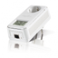
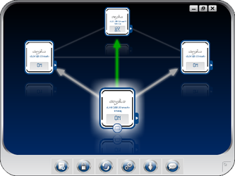
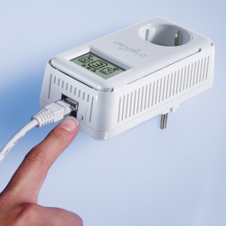

dLAN
Zum Verständnis dieses Artikels sind folgende Seiten hilfreich:
 dLAN ist der Produktname von Devolo für sogenanntes PowerLAN, also Netzwerk über die im Haus oder der Wohnung verbauten Stromleitungen. Dabei werden die Informationen in und auch längs von Stromversorgungsleitungen übertragen. So kann man ohne zusätzliche Verkabelung Rechner in einem Gebäude vernetzen. Andere Hersteller wie Acer, Allnet, Corinex, Prevola und Netgear bieten ebenfalls auf der Basis von PowerLAN funktionierende Geräte an. Das Verfahren wird auch als "Powerline" oder "Home-Plug" bezeichnet. Nachbauten gibt es von der Fa. Conrad.
|  |
| dLAN® Cockpit |
Übersicht¶
Mittlerweile gibt es
Homeplug 1.0 für das Übertragen von Daten und Audiosignalen mit ursprünglichen 14 MBit/s
das für Audio und Video geeignete Homeplug AV mit aktuell bis zu 500 MBit/s.
für das Übertragen von TV-Satellitensignalen das devolo-Produkt TV Sat PC
Diese beiden Standards HomePlug 1.0 und HomePlug AV können, da auf verschiedenen Frequenzen arbeitend, parallel im selben Stromnetz betrieben werden, kommunizieren aber nicht miteinander.
Von Devolo werden verschiedene dLAN-Produkte angeboten  :
:
500 MBit/S (Firmware nur Windows, Software für Linux vorhanden)
200 MBit/s (Firmware betriebssystemunabhängig, Software für Linux vorhanden)
85 MBit/s (Software für Linux vorhanden)
14 MBit/s (Treiber für USB für Linux vorhanden)
dlan Home zum Verbinden internetfähiger Geräte (Firmware nur Windows, Software für Linux vorhanden)
dlan TV Welt (betriebssystemunabhängige Firmware vorhanden)
Die Vianect Welt zum Transfer von Multimedia vom Rechner auf den Fernseher (nur Windows und MacOS)
Man benötigt mindestens zwei Adapter (von devolo z.B. als sog. "Starterkit" angeboten). Router bzw. Modem werden via Ethernetkabel mit dem einem Adapter verbunden, der andere Adapter mit der Netzwerkkarte des Rechners verbunden . Eine Verschlüsselung des Datentransfers (zwischen den beiden Adaptern) über das Hausstromnetz ist werksseitig bei der 200-MBit/s- und der 500-MBit/s-Produktreihe aktiviert eingebaut.
Alle Adapter verfügen mittlerweile über Ethernetanschluss.
Die Reichweite innerhalb des Stromnetzes wird mit 200 - 300 m angegeben, hängt sehr von der Verzweigung des Kabelbaumes und insbesondere der enthaltenen Dämpfung ab. Zwischengeschaltete Stromzähler stellen starke, aber nicht vollständige Hindernisse da. Es empfiehlt sich, die Adapter direkt in eine Wandsteckdose einzustecken und nicht Mehrfachstecker zu verwenden. Bei Mangel an Steckdosen gibt es Adapter mit integrierter Steckdose.
Wenn das über Adapter angeschlossene Gerät ausgeschaltet ist, geht der Adapter in einen Ruhemodus zum Stromsparen (je nach Modell unterschiedlich starke Reduktion des Verbrauches).
Nachteile¶
Die Technik hat jedoch auch ihre Tücken. So hört das Stromnetz nicht an der eigenen Wohnungstüre auf. Man muss also auf Verschlüsselung und sichere Passwörter achten. Außerdem kann je nach lokal vorhandener Elektroinstallation der Betrieb eines PowerLAN-Adapters gar nicht möglich sein, und Amateurfunker können durch solche Adapter beeinträchtigt werden. So warnt 
 beispielsweise das österreichische Bundesministerium für Verkehr, Innovation und Technologie vor "Hochfrequente(n) Störungen beim Betrieb von Powerline-Modems am 230 Volt Stromversorgungsnetz", so dass funktechnische Anlagen beeinträchtigt werden können.
beispielsweise das österreichische Bundesministerium für Verkehr, Innovation und Technologie vor "Hochfrequente(n) Störungen beim Betrieb von Powerline-Modems am 230 Volt Stromversorgungsnetz", so dass funktechnische Anlagen beeinträchtigt werden können.
Achtung!
Es besteht die Möglichkeit, dass Dritte mit einem eigenen gleichartigen Adapter heimlich an einer (Außen)steckdose den Internetzugang mitnutzen können.
Durch die Netzabstrahlung könnte ein unbefugter Dritter per Antenne gleichfalls auf den Datentransfer zugreifen.
Einrichtung¶
In Kombination mit dem Ethernet Standard ist die Verbindung über die Powerline Adapter 1, das Hausstromnetz und Powerline Adapter 2 sofort einsatzfähig. Vom Verständniss her wird dabei die Verbindung zwischen Router und Computer per Netzwerkkabel durch die Powerline Adapter Verbindung ersetzt. Wenn vor Verwendung der PowerLAN-Technik bereits eine LAN-Verbindung (durch Kabel zwischen Router und Rechner) eingerichtet war (per DHCP automatisch), sind keinerlei weitere Einstellungen vorzunehmen.
|  |
| dLAN® Verschlüsselungsknopf |
Verschlüsselung¶
Zur Erzeugung eines auf den Nutzer beschränkten Netzes innerhalb des Stromnetzes muss, da ja keine physikalischen Grenzen bestehen, eine Verschlüsselung durch Vergabe eines Passwortes zum Einsatz kommen. Es sollten alle zum Heimnetz zusammenzuschaltenden Adapter angesteckt sein. Dies kann auch auf einer Mehrfachsteckdose geschehen, und muss nicht am künftigen Standort sein!
Hierzu bietet Devolo mehrere Möglichkeiten an:
Automatisch¶
für die 500 MBit/s Produkte
Per Knopfdruck¶
Für die 200 MBit/s Produkte besteht die Möglichkeit, durch Drücken auf den an den Adaptern vorhandenen Verschlüsselungsknopf ein sicheres geschlossenes Netz zu erzeugen. Hierfür wird keinerlei Software benötigt. Später hinzukommende Adapter werden in gleicher Weise per Knopfdruck eingebunden.
Per Software¶
Werksseitig sind die Adapter mit einem (jeweils gleichen) Passwort versehen und verwenden eine integrierte 128bit-AES-Verschlüsselung. Da nun jeder dieses Passwort kennen kann, sollte dies unbedingt geändert werden.
Von der Herstellerseite gibt es Konfigurationssoftware für Linux, die mit "make" kompiliert werden muss:
Für die 14 MBit und 85 MBit Geräte Laut Hersteller ist die Software für Ubuntu 8.04 und 8.10 getestet.
Hinweis!
Fremdsoftware kann das System gefährden.
Man erhält die Programme
"
dlanlist" zum Auflisten der verbundenen dLAN Adapter mit deren MAC-Adressen"
dlanpasswd" zum Setzen des Passwortes jeweils für einen Adapter
Die Adapter werden jeweils mit ihrer MAC Adresse angezeigt und werden über diese angesprochen.
Einbindung in ein bestehendes dLAN-Heimnetz¶
Hierzu müssen neu hinzukommende Adapter mit der hinten aufgedruckten "Security Nummer" eingetragen werden bei gleichem vergebenem Passwort. Leider gibt es für diesen Vorgang keine Software, die unter Linux oder unter Wine läuft. Dazu wird also einmalig ein Windowsrechner benötigt.
Wireless Extender¶
Zur Inbetriebnahme bietet die Fa. Devolo aktuell keine Software mehr an, es gibt aber noch unter (dLAN® Wireless extender Linux 1.tar.gz ) Software, welche das Skript find_dlan_wireless_extender.sh enthält, das eine Konfiguration des Extenders erlaubt. Das erforderliche Paket libstdc++.so.5 kann hier als .deb aus den Ubuntu-Archiven heruntergeladen werden. Anschließend läuft das Skript. Jetzt können für den Extender WLAN-typische Einstellungen über ein Webinterface in einem Webbrowser vorgenommen werden.
Weitere Software¶
Für das dLAN gibt es im Wesentlichen:
Konfigurationssoftware
zur automatischen Erkennung aller angeschlossener Adapter, zum manuellen Eintragen der "Security Nummer" und Vergabe "en bloc" eines Passwortes.
Diese läuft so nur unter Windows.
Die Vergabe eines Passwortes kann jedoch mit "dlanpasswd" erfolgen
Informationssoftware
zum Anzeigen der angeschlossenen Adapter mit deren MAC-Adresse.
Unter Windows heißt diese "Informer", unter Linux "dlanlist"
Die Nutzung der Windowssoftware unter Wine funktioniert nicht.
- Erstellt mit Inyoka
-
 2004 – 2017 ubuntuusers.de • Einige Rechte vorbehalten
2004 – 2017 ubuntuusers.de • Einige Rechte vorbehalten
Lizenz • Kontakt • Datenschutz • Impressum • Serverstatus -
Serverhousing gespendet von